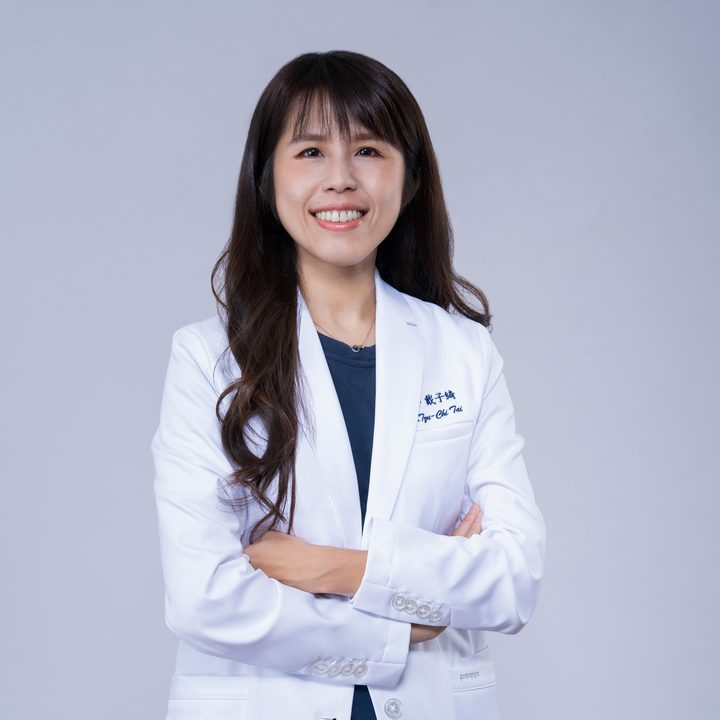

<meta charset="utf-8">
<meta name="viewport" content="width=device-width, initial-scale=1, viewport-fit=cover">
<title>聯盟動物醫院 獸醫師招募</title>
<meta name="claude:viewport-fit-sides" content="cover">
<link rel="preconnect" href="https://fonts.googleapis.com">
<link rel="preconnect" href="https://fonts.gstatic.com" crossorigin>
<link rel="stylesheet" href="https://fonts.googleapis.com/css2?family=Plus+Jakarta+Sans:wght@200;300;400;500;600&family=Noto+Sans+TC:wght@300;400;500;700&display=swap">
<style>
/* Layout: clean clinical template — photo hero with an oversized thin wordmark, a stat + statement band, a branch "department" block
   (left intro, right tabs + photo cards), then career, learning, pay, equipment and apply. Alliance gold leads; 教育中心 wine marks the center's parts. */
:root{
  --bg:#FFFFFF;
  --soft:#F6F3EE;
  --ink:#1F2328;
  --muted:#6A6F76;
  --line:#E7E3DC;
  --gold:#EBB649;
  --gold-ink:#8E6208;
  --gold-tint:#FBF3E2;
  --wine:#8A2A33;
  --dark:#23262B;
  --on-dark:#FFFFFF;
  --hero-a:#E9DCC4;  /* photo panel, fixed in both themes */
  --hero-b:#C9B48E;
  --sans:"Plus Jakarta Sans","Noto Sans TC","PingFang TC","Microsoft JhengHei",sans-serif;
}
@media (prefers-color-scheme:dark){:root:not([data-theme="light"]){
  --bg:#141517;--soft:#1C1E21;--ink:#ECEDEE;--muted:#A2A7AD;--line:#2D3034;
  --gold-ink:#EBB649;--gold-tint:#2A2416;--wine:#E2909A;--dark:#EBB649;--on-dark:#1F2328;color-scheme:dark}}
:root[data-theme="dark"]{
  --bg:#141517;--soft:#1C1E21;--ink:#ECEDEE;--muted:#A2A7AD;--line:#2D3034;
  --gold-ink:#EBB649;--gold-tint:#2A2416;--wine:#E2909A;--dark:#EBB649;--on-dark:#1F2328;color-scheme:dark}

*{box-sizing:border-box}
img{max-width:100%}
[hidden]{display:none!important}
body{margin:0;background:var(--bg);color:var(--ink);font-family:var(--sans);font-size:15.5px;line-height:1.75;font-weight:400;overflow-x:hidden}
.wrap{max-width:1200px;margin:0 auto;padding-left:max(20px,env(safe-area-inset-left,0px));padding-right:max(20px,env(safe-area-inset-right,0px))}
h1,h2,h3{margin:0;font-weight:500;line-height:1.3;text-wrap:balance}
p{margin:0}
.nb{white-space:nowrap}
a{color:inherit}
a:focus-visible,button:focus-visible{outline:2px solid var(--gold);outline-offset:3px}
section{padding-block:104px}
.eyebrow{font-size:.8rem;color:var(--muted);letter-spacing:.04em}
.h2{font-size:clamp(1.7rem,3.2vw,2.4rem);font-weight:500;letter-spacing:-.01em}
.lead{color:var(--muted);font-size:.95rem;max-width:38em}
.btn{display:inline-flex;align-items:center;gap:8px;padding:11px 20px;border-radius:6px;font-size:.88rem;font-weight:500;text-decoration:none;background:var(--dark);color:var(--on-dark);border:0;cursor:pointer;font-family:inherit;transition:transform .15s}
.btn:hover{transform:translateY(-1px)}
.btn.gold{background:var(--gold);color:#1F2328}
.pill{display:inline-flex;align-items:center;gap:6px;padding:5px 12px;border-radius:999px;background:var(--bg);border:1px solid var(--line);font-size:.75rem;color:var(--muted);white-space:nowrap}

.mark{display:inline-block;background:var(--c,currentColor);-webkit-mask:var(--m) center/contain no-repeat;mask:var(--m) center/contain no-repeat}
.mark.alliance{--m:url("__ALLIANCE__");--c:var(--gold);width:200px;aspect-ratio:383/61;max-width:52vw}
.mark.edu{--m:url("__EDU__");aspect-ratio:452/200}

/* ===== HERO ===== */
.hero{padding-block:16px 0}
.panel{position:relative;border-radius:14px;overflow:hidden;background:linear-gradient(160deg,var(--hero-a) 0%,#F3EBDD 55%,var(--hero-b) 100%);min-height:620px;color:#1F2328;isolation:isolate}
.panel .photo{position:absolute;right:4%;bottom:0;height:96%;width:auto;aspect-ratio:1;max-width:none;mix-blend-mode:multiply;object-fit:cover;object-position:center top;z-index:1}
.slides{position:absolute;inset:0}
.slide{position:absolute;inset:0;opacity:0;transition:opacity 1s ease;pointer-events:none}
.slide.on{opacity:1}
.slide.cover img{position:absolute;right:0;top:0;height:100%;width:64%;object-fit:cover;object-position:center 30%;-webkit-mask-image:linear-gradient(90deg,transparent 0,#000 38%);mask-image:linear-gradient(90deg,transparent 0,#000 38%)}
.slide .cap{position:absolute;right:30px;bottom:30px;font-size:.74rem;color:#fff;background:rgba(31,35,40,.62);backdrop-filter:blur(6px);-webkit-backdrop-filter:blur(6px);padding:5px 12px;border-radius:999px;z-index:2}
.dots{position:absolute;z-index:4;right:30px;top:50%;transform:translateY(-50%);display:grid;gap:8px}
.dots button{width:8px;height:8px;padding:0;border-radius:999px;border:0;background:rgba(31,35,40,.28);cursor:pointer;transition:height .3s,background .3s}
.dots button[aria-current="true"]{height:26px;background:#1F2328}
.dots button:focus-visible{outline:2px solid #1F2328;outline-offset:3px}
.panel .nav{position:relative;z-index:3;display:flex;justify-content:space-between;align-items:center;gap:16px;padding:22px 30px;flex-wrap:wrap}
.panel .nav .lock{display:flex;align-items:center;gap:16px}
.panel .nav .sep{width:1px;height:24px;background:rgba(31,35,40,.2)}
.panel .nav .edu{display:flex;align-items:center;gap:8px;color:#8A2A33;font-size:.8rem;font-weight:600;letter-spacing:.14em}
.panel .nav .edu .mark{height:24px}
.panel .nav a.nv{font-size:.82rem;text-decoration:none;padding:7px 14px;border-radius:6px;background:#FFFFFF;color:#1F2328}
.word{position:relative;z-index:-1;padding:30px 30px 0;font-weight:200;font-size:clamp(3.4rem,12vw,10rem);line-height:.9;letter-spacing:-.03em;color:#FFFFFF;text-shadow:0 2px 30px rgba(120,90,30,.12)}
.hero-copy{position:relative;z-index:3;padding:22px 30px 0;max-width:30em}
.hero-copy h1{font-size:clamp(1.25rem,2.3vw,1.6rem);font-weight:500;line-height:1.5}
.hero-copy p{margin-top:10px;font-size:.92rem;color:#4A4F55}
.hero-copy .btn{margin-top:22px;background:#1F2328;color:#fff}
.side-note{position:absolute;z-index:3;right:30px;top:96px;width:240px;font-size:.82rem;color:#1F2328}
.side-note a{display:inline-block;margin-top:8px;font-size:.78rem;text-decoration:underline;text-underline-offset:3px}
.float{position:absolute;z-index:3;left:30px;bottom:28px;display:flex;align-items:center;gap:12px;background:rgba(255,255,255,.88);backdrop-filter:blur(8px);-webkit-backdrop-filter:blur(8px);border-radius:10px;padding:10px 14px 10px 10px;max-width:310px;color:#1F2328}
.float .ico{flex:none;width:52px;height:52px;border-radius:8px;background:#8A2A33;display:grid;place-items:center}
.float .ico .mark{height:20px;--c:#fff}
.float b{display:block;font-size:.82rem;font-weight:600}
.float span{font-size:.74rem;color:#5A5F66;line-height:1.5;display:block}
.float .go{flex:none;width:28px;height:28px;border-radius:50%;background:#1F2328;color:#fff;display:grid;place-items:center;font-size:.8rem;text-decoration:none}

/* ===== INTRO STAT ===== */
.intro{display:grid;grid-template-columns:minmax(0,1fr) minmax(0,1fr);align-items:center;padding-bottom:56px;border-bottom:1px solid var(--line)}
.bignum{display:flex;flex-direction:column;justify-content:center;align-items:center;gap:18px;min-height:220px;padding:10px 24px;border-right:1px solid var(--line)}
.bignum .num{display:flex;align-items:flex-end;gap:12px;line-height:1}
.bignum b{font-weight:300;font-size:clamp(6rem,13vw,9.5rem);line-height:.85;letter-spacing:-.04em}
.bignum .unit{font-size:clamp(1.4rem,2.6vw,2rem);font-weight:500;color:var(--gold-ink);padding-bottom:.35em}
.bignum .pills{display:flex;gap:8px;flex-wrap:wrap;justify-content:center}
.statement{padding-left:56px;min-width:0}
.statement h2{font-size:clamp(1.3rem,2.4vw,1.75rem);font-weight:500;line-height:1.5}
.statement p{margin-top:14px;color:var(--muted);font-size:.9rem;max-width:34em}
.statement .btn{margin-top:22px}
.duo{display:grid;grid-template-columns:minmax(0,1fr);gap:20px;margin-top:40px}
.tile{border-radius:10px;overflow:hidden;background:var(--soft);min-width:0}
.tile.stats{display:grid;grid-template-columns:auto repeat(2,minmax(0,1fr));gap:28px;align-items:center;padding:20px 32px 20px 20px}
.hiring{width:120px;height:120px;border-radius:8px;background:var(--gold);color:#1F2328;display:grid;place-items:center;align-content:center;gap:2px;text-align:center}
.hiring b{font-size:2.6rem;font-weight:700;line-height:1}
.hiring span{font-size:.62rem;font-weight:600;letter-spacing:.16em}
.hiring em{font-style:normal;font-size:.72rem;font-weight:500}
.opening{display:block;text-decoration:none;padding:6px 0 6px 22px;border-left:1px solid var(--line);min-width:0;transition:transform .15s}
.opening:hover{transform:translateX(3px)}
.opening small{display:block;font-size:.74rem;color:var(--muted)}
.opening b{display:block;font-weight:500;font-size:clamp(1.3rem,2.2vw,1.7rem);line-height:1.3;margin-top:2px}
.opening span{display:block;font-size:.84rem;color:var(--gold-ink);font-weight:600;margin-top:4px}
.opening b::after{content:" →";font-weight:300;color:var(--muted)}

/* ===== FOUNDER ===== */
.founder{display:grid;grid-template-columns:minmax(0,.9fr) minmax(0,1.3fr);gap:56px;align-items:center;margin-top:72px}
.founder-pic{position:relative;border-radius:14px;background:linear-gradient(170deg,#F3EBDD,#E2D2B4);aspect-ratio:4/4.4;overflow:hidden;min-width:0}
.founder-pic img.cut{position:absolute;left:50%;bottom:0;height:94%;width:auto;max-width:none;transform:translateX(-50%);mix-blend-mode:multiply}
.founder-pic .tag{position:absolute;left:16px;top:16px;font-size:.72rem;font-weight:600;letter-spacing:.08em;background:#fff;color:#1F2328;padding:5px 12px;border-radius:999px}
.founder-txt{min-width:0}
.founder-txt .name{display:flex;align-items:baseline;gap:14px;flex-wrap:wrap;margin-top:8px}
.founder-txt .name b{font-size:clamp(2rem,4vw,2.8rem);font-weight:500;letter-spacing:.02em}
.founder-txt .name span{font-size:.9rem;color:var(--muted)}
.founder-txt .lead{margin-top:18px;font-size:1rem;max-width:34em}
.motto{margin-top:26px;border-left:3px solid var(--gold);padding:4px 0 4px 18px}
.motto b{display:block;font-size:1.25rem;font-weight:500}
.motto span{display:block;font-size:.88rem;color:var(--muted);margin-top:4px}
.values{display:flex;gap:10px;flex-wrap:wrap;margin-top:22px}
.values span{font-size:.82rem;font-weight:600;padding:6px 14px;border-radius:999px;background:var(--gold-tint);color:var(--gold-ink)}
.founder-team{display:flex;gap:16px;align-items:center;margin-top:28px;padding:14px;border-radius:12px;background:var(--soft);max-width:520px}
.founder-team img{width:150px;aspect-ratio:340/279;object-fit:cover;border-radius:8px;flex:none}
.founder-team p{font-size:.84rem;color:var(--muted)}

/* ===== BRANCHES ===== */
.dept{background:var(--soft);margin-top:104px}
.dept-grid{display:grid;grid-template-columns:300px minmax(0,1fr);gap:56px;align-items:start}
.dept-intro .h2{margin-top:10px}
.dept-intro .lead{margin-top:14px}
.arrows{display:flex;gap:10px;margin-top:28px}
.arrows button{width:42px;height:42px;border-radius:50%;border:1px solid var(--line);background:var(--bg);color:var(--ink);cursor:pointer;font-size:1rem;font-family:inherit}
.arrows button.on{background:var(--dark);color:var(--on-dark);border-color:var(--dark)}
.tabs{display:flex;flex-wrap:wrap;gap:8px;align-items:center}
.tab{font-family:inherit;font-size:.82rem;padding:7px 14px;border-radius:6px;border:1px solid var(--line);background:var(--bg);color:var(--ink);cursor:pointer;display:inline-flex;align-items:center;gap:6px}
.tab[aria-selected="true"]{background:var(--dark);color:var(--on-dark);border-color:var(--dark)}
.tab .dot{width:6px;height:6px;border-radius:50%;background:var(--gold)}
.region-sep{font-size:.7rem;letter-spacing:.14em;color:var(--muted);padding:0 2px 0 8px}
.region-sep:first-child{padding-left:0}
.card-row{display:grid;grid-template-columns:repeat(3,minmax(0,1fr));gap:18px;margin-top:22px}
.pcard{position:relative;border-radius:10px;overflow:hidden;background:#EDE9E3;aspect-ratio:3/4;min-width:0;margin:0}
.pcard img{width:100%;height:100%;object-fit:cover;object-position:center 18%}
.pcard .who{position:absolute;left:10px;right:10px;bottom:10px;background:rgba(255,255,255,.93);color:#1F2328;border-radius:8px;padding:10px 12px}
.pcard .who b{display:block;font-size:.92rem;font-weight:600}
.pcard .who span{display:block;font-size:.74rem;color:#5A5F66;line-height:1.5}
.pcard.empty{display:grid;place-items:center;text-align:center;padding:24px;background:var(--bg);border:1px dashed var(--line)}
.pcard.empty span{font-size:.84rem;color:var(--muted)}
.icard{border-radius:10px;background:var(--bg);border:1px solid var(--line);padding:24px;min-width:0;display:flex;flex-direction:column;gap:14px}
.icard.wide{grid-column:span 2}
.icard .city{font-size:.76rem;color:var(--muted)}
.icard h3{font-size:1.5rem;font-weight:500}
.icard .focus{font-size:.78rem;font-weight:600;color:var(--gold-ink);background:var(--gold-tint);padding:3px 10px;border-radius:4px;align-self:flex-start}
.icard p{font-size:.9rem;color:var(--muted)}
.icard .tags{display:flex;flex-wrap:wrap;gap:6px}
.icard .tags span{font-size:.72rem;padding:3px 9px;border-radius:999px;border:1px solid var(--line);color:var(--muted)}
.icard .jobs{display:grid;gap:6px;margin-top:auto}
.icard .job{display:flex;justify-content:space-between;gap:10px;font-size:.84rem;font-weight:500;padding:9px 12px;border-radius:6px;background:var(--gold-tint)}
.icard .job small{color:var(--muted);font-weight:400}
.icard .job.none{background:transparent;border:1px dashed var(--line);color:var(--muted);font-weight:400}
.icard .meta{font-size:.82rem;color:var(--muted)}
.icard .apply-link{font-size:.84rem;font-weight:600;text-decoration:none;border-bottom:1.5px solid var(--gold);align-self:flex-start}

/* ===== JOBS (JD) ===== */
.jd-grid{display:grid;grid-template-columns:repeat(2,minmax(0,1fr));gap:18px}
.jd{border-radius:14px;border:1px solid var(--line);background:var(--bg);padding:30px;display:flex;flex-direction:column;gap:20px;min-width:0}
.jd.night{background:#1F2328;color:#F2F2F3;border-color:#1F2328}
.jd .top{display:flex;justify-content:space-between;align-items:start;gap:12px;flex-wrap:wrap}
.jd .where{font-size:.78rem;color:var(--muted)}
.jd.night .where,.jd.night .muted{color:#A9AEB5}
.jd h3{font-size:1.45rem;font-weight:500;margin-top:4px}
.jd .badge{font-size:.72rem;font-weight:600;padding:4px 10px;border-radius:999px;background:var(--gold);color:#1F2328;white-space:nowrap}
.jd .pay{font-weight:300;font-size:clamp(2rem,3.6vw,2.6rem);letter-spacing:-.02em;line-height:1.1;display:block}
.jd .pay small{font-size:.36em;font-weight:500;margin-left:6px;letter-spacing:0}
.facts{display:grid;grid-template-columns:repeat(2,minmax(0,1fr));gap:10px}
.facts div{border-radius:8px;background:var(--soft);padding:10px 12px;min-width:0}
.jd.night .facts div{background:#2A2E34}
.facts b{display:block;font-size:.7rem;font-weight:500;color:var(--muted);letter-spacing:.04em}
.jd.night .facts b{color:#A9AEB5}
.facts span{display:block;font-size:.86rem;font-weight:500;margin-top:2px}
.jd h4{margin:0 0 8px;font-size:.78rem;font-weight:600;letter-spacing:.06em;color:var(--gold-ink)}
.jd.night h4{color:#EBB649}
.jd ul{margin:0;padding:0;list-style:none;display:grid;gap:6px;font-size:.86rem}
.jd li{display:flex;gap:10px}
.jd li::before{content:"";flex:none;width:5px;height:5px;border-radius:50%;background:var(--gold);margin-top:.7em}
.jd .two{display:grid;grid-template-columns:repeat(2,minmax(0,1fr));gap:18px}
.jd .apply-row{margin-top:auto;display:flex;gap:12px;align-items:center;flex-wrap:wrap}
.jd.night .btn{background:#EBB649;color:#1F2328}
.grades{display:grid;grid-template-columns:repeat(3,minmax(0,1fr));gap:14px;margin-top:18px}
.grade{border-radius:10px;background:var(--soft);padding:20px;min-width:0}
.grade .g{display:flex;align-items:baseline;justify-content:space-between;gap:8px}
.grade .g b{font-size:1.1rem;font-weight:600}
.grade .g span{font-size:.78rem;font-weight:600;color:var(--gold-ink)}
.grade p{font-size:.84rem;color:var(--muted);margin-top:8px}
.grade p+p{margin-top:4px}
.cake-head{margin:64px 0 22px;display:flex;justify-content:space-between;align-items:end;gap:16px;flex-wrap:wrap}
.cake-head h3{font-size:clamp(1.3rem,2.4vw,1.7rem);font-weight:500;margin-top:6px}
.cake{display:grid;grid-template-columns:repeat(4,minmax(0,1fr));gap:14px}
.ck{border-radius:12px;border:1px solid var(--line);padding:22px;min-width:0;background:var(--bg)}
.ck.att{border-color:#8A2A33;box-shadow:inset 0 0 0 1px #8A2A33}
.ck .l{display:flex;align-items:baseline;gap:10px}
.ck .l b{font-weight:300;font-size:2.6rem;line-height:1}
.ck .l span{font-size:1.05rem;font-weight:600}
.ck .l em{font-style:normal;font-size:.72rem;color:var(--muted);margin-left:auto}
.ck ul{margin:14px 0 0;padding:0;list-style:none;display:grid;gap:6px;font-size:.84rem;color:var(--muted)}
.ck .veto{display:inline-block;margin-top:14px;font-size:.72rem;font-weight:600;color:#fff;background:#8A2A33;padding:3px 9px;border-radius:4px}
.how{margin-top:14px;border-radius:12px;background:var(--gold-tint);padding:20px 24px;display:flex;gap:10px 28px;flex-wrap:wrap;font-size:.86rem}
.how b{font-weight:600}

/* ===== CAREER ===== */
.sec-head{display:flex;justify-content:space-between;align-items:end;gap:24px;flex-wrap:wrap;margin-bottom:44px}
.sec-head .h2{margin-top:8px}
.ladder{display:grid;grid-template-columns:repeat(5,minmax(0,1fr));gap:14px;align-items:end}
.rung{border-radius:10px;background:var(--soft);padding:20px 18px;display:flex;flex-direction:column;min-width:0}
.rung:nth-child(1){min-height:220px}.rung:nth-child(2){min-height:260px}.rung:nth-child(3){min-height:300px}.rung:nth-child(4){min-height:340px}
.rung:nth-child(5){min-height:380px;background:var(--dark);color:var(--on-dark)}
.rung .lv{font-size:.72rem;color:var(--muted);letter-spacing:.08em}
.rung:nth-child(5) .lv,.rung:nth-child(5) p{color:inherit;opacity:.75}
.rung h3{font-size:1.15rem;margin-top:6px}
.rung .t{font-size:.8rem;margin-top:4px;color:var(--gold-ink);font-weight:600}
.rung:nth-child(5) .t{color:inherit}
.rung p{font-size:.82rem;color:var(--muted);margin-top:12px}
.rung .nx{margin-top:auto;padding-top:14px;font-size:.78rem;font-weight:600}

/* ===== LEARNING ===== */
.learn{display:grid;grid-template-columns:minmax(0,1fr) minmax(0,1.5fr);gap:56px;align-items:start}
.learn-feature{border-radius:12px;background:#7A222B;color:#fff;padding:36px 32px;position:relative;overflow:hidden;min-width:0}
.learn-feature .mark{position:absolute;right:-30px;bottom:-30px;width:260px;--c:#fff;opacity:.08}
.learn-feature .tag{font-size:.72rem;letter-spacing:.14em;color:#EBB649}
.learn-feature h3{font-size:1.5rem;margin-top:12px}
.learn-feature p{font-size:.92rem;margin-top:14px;opacity:.85}
.learn-feature b.n{display:block;font-weight:200;font-size:4.6rem;line-height:1;margin-top:26px;letter-spacing:-.03em}
.learn-feature b.n small{font-size:.24em;font-weight:500;margin-left:6px;letter-spacing:0}
.learn-list{display:grid;grid-template-columns:repeat(2,minmax(0,1fr));gap:0 36px}
.li{padding:20px 0;border-top:1px solid var(--line);min-width:0}
.li h3{font-size:1rem;font-weight:600}
.li h3 small{font-weight:400;color:var(--muted);font-size:.78rem;margin-left:8px}
.li p{font-size:.86rem;color:var(--muted);margin-top:6px}

/* ===== EYE (seed + meeting) ===== */
.eye{display:grid;grid-template-columns:minmax(0,1.15fr) minmax(0,1fr);gap:18px;margin-top:44px}
.seed{border-radius:14px;background:var(--gold-tint);padding:30px;min-width:0}
.seed .top{display:flex;justify-content:space-between;align-items:baseline;gap:12px;flex-wrap:wrap}
.seed h3{font-size:1.4rem;font-weight:500}
.seed .top span{font-size:.76rem;font-weight:600;color:var(--gold-ink)}
.seed dl{margin:18px 0 0;display:grid;grid-template-columns:auto minmax(0,1fr);gap:0}
.seed dt,.seed dd{margin:0;padding:12px 0;border-top:1px solid rgba(142,98,8,.18);font-size:.88rem}
.seed dt{font-weight:600;padding-right:22px;white-space:nowrap;color:var(--gold-ink)}
.seed dd{color:var(--ink)}
.meet{border-radius:14px;background:#1F2328;color:#F2F2F3;padding:30px;display:flex;flex-direction:column;gap:16px;min-width:0}
.meet .tag{font-size:.72rem;letter-spacing:.12em;color:#EBB649}
.meet h3{font-size:1.4rem;font-weight:500}
.meet .freq{display:flex;align-items:baseline;gap:8px}
.meet .freq b{font-weight:200;font-size:3.4rem;line-height:1;letter-spacing:-.03em}
.meet .freq span{font-size:.9rem;font-weight:500}
.meet p{font-size:.88rem;color:#B9BEC4}
.meet figure{margin:auto 0 0;border-radius:10px;overflow:hidden;background:#fff}
.meet figure img{width:100%;display:block}
.meet figcaption{font-size:.72rem;color:#6A6F76;padding:8px 12px;background:#fff}

/* ===== ADVISORS ===== */
.adv{display:grid;grid-template-columns:repeat(2,minmax(0,1fr));gap:18px}
.advc{display:grid;grid-template-columns:180px minmax(0,1fr);gap:24px;border-radius:14px;border:1px solid var(--line);padding:22px;background:var(--bg);min-width:0}
.advc .pic{border-radius:10px;background:#fff;overflow:hidden;align-self:start;aspect-ratio:1;border:1px solid var(--line)}
.advc .pic img{width:100%;height:100%;object-fit:cover}
.advc h3{font-size:1.4rem;font-weight:500}
.advc h3 small{font-size:.8rem;color:var(--muted);margin-left:6px;font-weight:500}
.advc .sp{display:inline-block;margin-top:8px;font-size:.78rem;font-weight:600;color:var(--gold-ink);background:var(--gold-tint);padding:3px 10px;border-radius:4px}
.advc ul{margin:14px 0 0;padding:0;list-style:none;display:grid;gap:5px;font-size:.84rem;color:var(--muted)}
.advc li{display:flex;gap:9px}
.advc li::before{content:"";flex:none;width:5px;height:5px;border-radius:50%;background:var(--gold);margin-top:.7em}

/* ===== DONE (activities) ===== */
.done-grid{display:grid;grid-template-columns:repeat(4,minmax(0,1fr));grid-auto-rows:230px;gap:14px}
.ph{position:relative;margin:0;border-radius:10px;overflow:hidden;background:var(--soft);min-width:0}
.ph img{width:100%;height:100%;object-fit:cover;transition:transform .5s ease}
.ph:hover img{transform:scale(1.03)}
.ph.w2{grid-column:span 2}.ph.h2{grid-row:span 2}
.ph.contain{background:#fff;border:1px solid var(--line)}
.ph.contain img{object-fit:contain;padding:10px}
.ph figcaption{position:absolute;left:0;right:0;bottom:0;padding:34px 14px 12px;background:linear-gradient(transparent,rgba(20,20,22,.72));color:#fff}
.ph figcaption small{display:inline-block;font-size:.68rem;letter-spacing:.08em;padding:2px 8px;border-radius:999px;background:rgba(255,255,255,.22)}
.ph figcaption small.edu{background:#8A2A33}
.ph figcaption b{display:block;font-size:.92rem;font-weight:600;margin-top:6px;line-height:1.45}
.posters-head{display:flex;justify-content:space-between;align-items:end;gap:16px;flex-wrap:wrap;margin:56px 0 18px}
.posters-head h3{font-size:1.2rem;font-weight:500}
.posters{display:grid;grid-template-columns:repeat(5,minmax(0,1fr));gap:14px}
.posters img{width:100%;aspect-ratio:700/970;object-fit:cover;border-radius:8px;border:1px solid var(--line);background:#fff}

/* ===== PAY ===== */
.pay-sec{background:var(--soft)}
.pay{display:grid;grid-template-columns:repeat(3,minmax(0,1fr));gap:18px}
.pc{border-radius:12px;background:var(--bg);padding:28px;min-width:0;border:1px solid var(--line)}
.pc.hi{background:var(--dark);color:var(--on-dark);border-color:var(--dark)}
.pc .who{font-size:.8rem;color:var(--muted)}
.pc.hi .who{color:inherit;opacity:.7}
.pc .amt{font-weight:300;font-size:clamp(2.4rem,4.4vw,3.2rem);line-height:1.1;letter-spacing:-.03em;margin-top:8px}
.pc .amt small{font-size:.32em;font-weight:500;margin-left:4px;letter-spacing:0}
.pc ul{margin:18px 0 0;padding:0;list-style:none;display:grid;gap:8px;font-size:.86rem}
.pc li{display:flex;gap:10px}
.pc li::before{content:"";flex:none;width:6px;height:6px;border-radius:50%;background:var(--gold);margin-top:.65em}
.perks{display:grid;grid-template-columns:repeat(4,minmax(0,1fr));gap:18px;margin-top:18px}
.perk{border-radius:10px;background:var(--bg);border:1px solid var(--line);padding:18px 20px;min-width:0}
.perk b{display:block;font-size:.9rem;font-weight:600}
.perk span{display:block;font-size:.8rem;color:var(--muted);margin-top:4px}


/* ===== HONEST ===== */
.honest{display:grid;grid-template-columns:minmax(0,1fr) minmax(0,1.6fr);gap:56px}
.hl{display:grid;grid-template-columns:repeat(2,minmax(0,1fr));gap:14px}
.hc{border-radius:10px;background:var(--soft);padding:20px 22px;min-width:0}
.hc b{display:block;font-size:.95rem;font-weight:600}
.hc p{font-size:.84rem;color:var(--muted);margin-top:6px}
.hc.full{grid-column:1/-1}

/* ===== MESSAGE + APPLY ===== */
.msg{border-radius:14px;background:var(--gold-tint);padding:48px;display:grid;grid-template-columns:minmax(0,1fr) minmax(0,1.8fr);gap:48px;align-items:start}
.msg .who{display:flex;gap:16px;align-items:center}
.msg .who img{width:76px;height:76px;border-radius:50%;object-fit:cover;object-position:center 15%;background:#fff}
.msg .who b{display:block;font-weight:600}
.msg .who span{display:block;font-size:.8rem;color:var(--muted)}
.msg .body{display:grid;gap:14px;font-size:1.04rem;line-height:1.95}
.msg .body p:first-child{font-size:1.3rem;font-weight:500}
.apply{margin-top:20px;border-radius:14px;background:var(--dark);color:var(--on-dark);padding:48px;display:grid;grid-template-columns:minmax(0,1.4fr) minmax(0,1fr);gap:40px;align-items:center}
.apply h2{font-size:clamp(1.6rem,3vw,2.2rem);font-weight:400}
.apply p{opacity:.75;margin-top:12px;font-size:.92rem}
.apply .box{display:grid;gap:14px;justify-items:start}
.apply .btn.gold{background:var(--gold);color:#1F2328}
.mail{display:flex;align-items:center;gap:10px;flex-wrap:wrap;font-size:.95rem}
.mail code{font-family:inherit;user-select:all}
.copy{font-family:inherit;font-size:.76rem;padding:4px 10px;border-radius:4px;border:1px solid currentColor;background:transparent;color:inherit;cursor:pointer;opacity:.8}
footer{padding-block:40px}
footer .wrap{display:flex;justify-content:space-between;align-items:center;gap:16px;flex-wrap:wrap;font-size:.8rem;color:var(--muted)}
footer .edu{display:flex;align-items:center;gap:8px;color:var(--wine);font-weight:600;letter-spacing:.14em;font-size:.78rem}
footer .edu .mark{height:22px}

@media (prefers-reduced-motion:no-preference){
  .word,.hero-copy,.float{animation:up .9s cubic-bezier(.2,.7,.2,1) both}
  .hero-copy{animation-delay:.1s}.float{animation-delay:.25s}
  .panel .photo{animation:fade 1.2s ease both}
  .swap{animation:fade .35s ease both}
}
@keyframes up{from{transform:translateY(14px);opacity:.3}}
@keyframes fade{from{opacity:.35}}

@media (max-width:1000px){
  .eye{grid-template-columns:minmax(0,1fr)}
  .adv{grid-template-columns:minmax(0,1fr)}
  .founder{grid-template-columns:minmax(0,1fr);gap:28px}
  .founder-pic{max-width:420px}
  .jd-grid{grid-template-columns:minmax(0,1fr)}
  .cake{grid-template-columns:repeat(2,minmax(0,1fr))}
  .side-note{display:none}
  .panel{min-height:580px}
  .panel .photo{right:-10%;height:74%}
  .intro{grid-template-columns:minmax(0,1fr)}
  .bignum{border-right:0;border-bottom:1px solid var(--line);padding-bottom:20px}
  .statement{padding:32px 0 0}
  .duo{grid-template-columns:minmax(0,1fr)}
  .dept-grid,.learn,.honest,.msg,.apply{grid-template-columns:minmax(0,1fr);gap:32px}
  .ladder{grid-template-columns:repeat(2,minmax(0,1fr))}
  .rung:nth-child(n){min-height:0}
  .rung:nth-child(5){grid-column:1/-1}
  .perks{grid-template-columns:repeat(2,minmax(0,1fr))}
  .pay{grid-template-columns:minmax(0,1fr)}
  .done-grid{grid-auto-rows:190px}
}
@media (max-width:640px){
  section{padding-block:72px}
  .seed,.meet{padding:22px}
  .seed dl{grid-template-columns:minmax(0,1fr)}
  .seed dt{padding-bottom:0;border-top:1px solid rgba(142,98,8,.18)}
  .seed dd{border-top:0;padding-top:4px}
  .advc{grid-template-columns:110px minmax(0,1fr);gap:16px;padding:16px}
  .founder-team{flex-direction:column;align-items:flex-start}
  .founder-team img{width:100%}
  .jd{padding:22px}
  .jd .two,.facts,.grades,.cake{grid-template-columns:minmax(0,1fr)}
  .done-grid{grid-template-columns:repeat(2,minmax(0,1fr));grid-auto-rows:170px;gap:10px}
  #environment .ph.h2{grid-column:span 2}
  .posters-wrap{overflow-x:auto;margin-inline:-20px;padding-inline:20px}
  .posters{grid-template-columns:repeat(5,140px)}
  .dept{margin-top:72px}
  .panel{min-height:660px}
  .panel .photo{right:-22%;height:52%}
  .slide.cover img{width:100%;height:50%;top:auto;bottom:0;-webkit-mask-image:linear-gradient(180deg,transparent 0,#000 35%);mask-image:linear-gradient(180deg,transparent 0,#000 35%)}
  .slide .cap{display:none}
  .dots{top:auto;bottom:auto;right:18px;top:78px;transform:none;grid-auto-flow:column}
  .dots button[aria-current="true"]{height:8px;width:24px}
  .panel .nav{padding:16px 18px}
  .panel .nav .sep,.panel .nav .edu{display:none}
  .word{padding:20px 18px 0}
  .hero-copy{padding:16px 18px 0}
  .float{left:14px;right:14px;bottom:14px;max-width:none}
  .tile.stats{grid-template-columns:repeat(2,minmax(0,1fr));padding:20px}
  .tile.stats{grid-template-columns:minmax(0,1fr)}
  .hiring{width:auto;height:auto;padding:14px;grid-auto-flow:column;gap:10px;justify-content:start}
  .hiring b{font-size:1.6rem}
  .opening{border-left:0;border-top:1px solid var(--line);padding:14px 0 0}
  .card-row{grid-template-columns:repeat(2,minmax(0,1fr))}
  .icard,.icard.wide{grid-column:1/-1}
  .ladder,.learn-list,.hl,.perks{grid-template-columns:minmax(0,1fr)}
  .msg,.apply{padding:28px 22px}
}
</style>

<header class="hero">
  <div class="wrap">
    <div class="panel">
      <div class="slides" id="slides">
        <div class="slide on"></div>
        <div class="slide cover"><span class="cap">醫師團隊與 CT 斷層掃描</span></div>
        <div class="slide cover"><span class="cap">門診中的醫師與助理</span></div>
        <div class="slide cover"><span class="cap">院內課程：如何向飼主說明醫療選項</span></div>
      </div>
      <div class="dots" id="dots" aria-label="切換主視覺照片"></div>
      <div class="nav">
        <div class="lock">
          <span class="mark alliance" role="img" aria-label="聯盟動物醫院 Alliance Veterinary Hospital"></span>
          <span class="sep" aria-hidden="true"></span>
          <span class="edu"><span class="mark edu" aria-hidden="true"></span>EDUCATION CENTER</span>
        </div>
        <a class="nv" href="https://forms.gle/SVXiBVjkQ3kXTBmr6" target="_blank" rel="noopener">應徵表單</a>
      </div>
      <div class="word" aria-hidden="true">ALLIANCE</div>
      <div class="hero-copy">
        <h1>2026 獸醫師招募<br>醫療不孤單，病例有人一起討論。</h1>
        <p>9 間院所，每一間的專科方向都不同。各院定位、院長專長、薪資與培育制度都整理在這裡。</p>
        <a class="btn" href="#jobs">看公告職缺</a>
      </div>
      <div class="float">
        <span class="ico"><span class="mark edu" aria-hidden="true"></span></span>
        <div><b>聯盟教育中心</b><span>每月 2 次美國內科專科病例討論，加上 Guideline、M&amp;M 與卓越講堂</span></div>
        <a class="go" href="#learning" aria-label="看培育制度">↓</a>
      </div>
    </div>
  </div>
</header>

<main>
<section style="padding-bottom:0">
  <div class="wrap">
    <div class="intro">
      <div class="bignum">
        <div class="num"><b>9</b><span class="unit">間院所</span></div>
        <div class="pills"><span class="pill">2016 創立・十週年</span><span class="pill">台灣 8 間・美國 1 間</span></div>
      </div>
      <div class="statement">
        <h2><span class="nb">以專科發展為方向的</span><span class="nb">連鎖醫療體系，</span><br><span class="nb">醫師身後有一整個團隊。</span></h2>
        <p>飼主走進任何一間分院，都能得到同樣標準的醫療；醫師遇到困難病例，背後有一整個體系可以會診與討論。行政與營運由體系處理，醫師專心看診與進修。</p>
        <a class="btn" href="#career">看職涯發展</a>
      </div>
    </div>
    <div class="duo">
      <div class="tile stats">
        <div class="hiring"><b>徵</b><span>NOW HIRING</span><em>建國・台北</em></div>
        <a class="opening" href="#jobs"><small>全職・排班制</small><b>主治獸醫師</b><span>6–14 萬＋抽成・臨床 2 年以上</span></a>
        <a class="opening" href="#jobs"><small>固定大夜班 21:30–09:30・建國／台北籌備院</small><b>大夜班主治獸醫師</b><span>15 萬起＋抽成・夜間急診</span></a>
      </div>
    </div>
    <div class="founder" id="founder">
      <div class="founder-pic">
        <span class="tag">創辦人／執行長</span>
        
      </div>
      <div class="founder-txt">
        <p class="eyebrow">創辦人</p>
        <div class="name"><b>黃聰圍 醫師</b><span>聯盟動物醫院 執行長／創辦人</span></div>
        <p class="lead">聯盟動物醫院所屬的寵物百分百，是一家由獸醫師創立的企業。以動物為核心，橫跨動物醫療、寵物用品、寵物美容、獸醫師教育、獸醫院資訊科技等領域，讓醫療之外的保健、飲食與生活習慣也能一起照顧到。</p>
        <div class="motto"><b>For you and them</b><span>為人與動物創造福祉，是百分百創立的宗旨。</span></div>
        <div class="values"><span>專業</span><span>熱情</span><span>紀律</span></div>
        <div class="founder-team"><p>「守護寵物的健康」是獸醫師誓詞，也是我們每天在診間落實的事。</p></div>
      </div>
    </div>
  </div>
</section>

<section class="dept" id="branches">
  <div class="wrap dept-grid">
    <div class="dept-intro">
      <p class="eyebrow">各分院定位</p>
      <h2 class="h2">選院，比選薪水更重要</h2>
      <p class="lead">每間分院都有自己的專科主軸與院長。切換分院，看定位、院長專長與目前職缺。金點表示有公告職缺。</p>
      <div class="arrows"><button type="button" id="prev" aria-label="上一間分院">←</button><button type="button" id="next" class="on" aria-label="下一間分院">→</button></div>
    </div>
    <div>
      <div class="tabs" id="tabs" role="tablist" aria-label="分院"></div>
      <div class="card-row" id="cards" role="tabpanel" aria-live="polite"></div>
    </div>
  </div>
</section>

<section id="jobs" style="padding-bottom:40px">
  <div class="wrap">
    <div class="sec-head">
      <div><p class="eyebrow">公告中的職缺</p><h2 class="h2">建國分院與台北籌備院正在找的醫師</h2></div>
      <p class="lead" style="max-width:28em">以下內容來自正式職務說明書。建國分院位於高雄市苓雅區建國一路 195 號；大夜班主治也招募台北籌備院，可以一起參與新院的建立。直屬主管為各院院長。</p>
    </div>
    <div class="jd-grid">
      <article class="jd">
        <div class="top"><div><span class="where">建國分院・全職排班制</span><h3>主治獸醫師</h3></div></div>
        <span class="pay">6–14 萬<small>常態月薪，另有抽成可挑戰更高</small></span>
        <div class="facts">
          <div><b>年資</b><span>臨床 2 年以上</span></div>
          <div><b>工時</b><span>週工時 40 小時，含假日／夜診輪值</span></div>
          <div><b>專長佳者</b><span>心臟、內科、內分泌、影像、麻醉</span></div>
          <div><b>發展科別</b><span>內科、腫瘤、特寵、貓科、外科、影像</span></div>
        </div>
        <div><h4>主要職責</h4><ul>
          <li>門診、住院與手術，獨立處理常見至複雜病例</li>
          <li>參與急診與術後併發處理，發起或接受院內外會診</li>
          <li>向飼主說明病情、療程、費用與預後</li>
          <li>病歷完整、處方與管制藥品合規、落實院內感控</li>
          <li>參與病例討論與教育訓練，帶領助理與新進醫師</li>
        </ul></div>
        <div class="two">
          <div><h4>必要條件</h4><ul><li>中華民國獸醫師證書，可辦理執業登記</li><li>臨床經驗 2 年以上</li></ul></div>
          <div><h4>加分條件</h4><ul><li>專科學會會員或認證</li><li>英文文獻閱讀能力</li><li>教學醫院、專科醫院或主治經歷</li></ul></div>
        </div>
        <div class="apply-row"><a class="btn" href="https://forms.gle/SVXiBVjkQ3kXTBmr6" target="_blank" rel="noopener">應徵主治獸醫師 ↗</a></div>
      </article>
      <article class="jd night">
        <div class="top"><div><span class="where">建國分院／台北籌備院・固定大夜班</span><h3>大夜班主治獸醫師（急診）</h3></div><span class="badge">夜間急診</span></div>
        <span class="pay">15 萬起<small>月薪，搭配業績抽成</small></span>
        <div class="facts">
          <div><b>時段</b><span>21:30–09:30（含 2 小時用餐）</span></div>
          <div><b>工時</b><span>4 週變形工時 160 小時，約 16 班</span></div>
          <div><b>年資</b><span>小動物臨床 2 年以上</span></div>
          <div><b>班別</b><span>固定大夜，不輪班；超時給付加班費</span></div>
        </div>
        <div><h4>主要職責</h4><ul>
          <li>內外科急診檢傷、穩定與處置：導尿、腸胃異物、腫瘤破裂、GDV、剖腹產</li>
          <li>夜間巡房、重症監控、急診手術與麻醉管理</li>
          <li>X 光、超音波、血檢判讀；安撫情緒激動的飼主</li>
          <li>09:30 與日班醫師交班，必要時聯繫轉診</li>
          <li>帶領夜班助理，維持夜間院內運作</li>
          <li>台北籌備院：參與新院夜間流程與 SOP 建立</li>
        </ul></div>
        <div class="two">
          <div><h4>必要條件</h4><ul><li>獸醫師執照及執業資格</li><li>熟稔內外科學理</li><li>通過院內急重症臨場反應測驗</li><li>能配合固定大夜班</li></ul></div>
          <div><h4>加分條件</h4><ul><li>心臟、內科、內分泌、影像或麻醉專長</li><li>急診、重症或 24 小時醫院經驗</li><li>能獨立執行急診手術</li></ul></div>
        </div>
        <div class="apply-row"><a class="btn" href="https://forms.gle/SVXiBVjkQ3kXTBmr6" target="_blank" rel="noopener">應徵大夜班主治 ↗</a></div>
      </article>
    </div>


    <div class="cake-head">
      <div><p class="eyebrow">給應徵的你</p><h3>如果你是這樣的醫師，我們很想認識你</h3></div>
      <p class="lead" style="max-width:26em">面談不是考試。我們會請你聊聊印象深刻的病例、你怎麼和飼主溝通，以及你想往哪裡發展。</p>
    </div>
    <div class="cake">
      <div class="ck"><div class="l"><span>臨床判斷</span></div><ul><li>資訊不完整時，你也能整理出鑑別診斷與處置順序</li><li>遇到複雜病例，你知道什麼時候該找人一起討論</li></ul></div>
      <div class="ck att"><div class="l"><span>以動物為優先</span></div><ul><li>你不為業績推診，必要的醫療也不打折扣</li><li>判斷錯了願意說出來，和大家一起檢討</li></ul></div>
      <div class="ck"><div class="l"><span>持續學習</span></div><ul><li>你對新藥、新療法與治療指引保持好奇</li><li>你有想深耕的專科，或想在這裡找到方向</li></ul></div>
      <div class="ck"><div class="l"><span>溝通與帶人</span></div><ul><li>你能用飼主聽得懂的話說明病情與費用</li><li>你願意帶助理與新進醫師一起成長</li></ul></div>
    </div>
  </div>
</section>

<section id="career">
  <div class="wrap">
    <div class="sec-head">
      <div><p class="eyebrow">職涯成長階梯</p><h2 class="h2">每一階，都有對應的條件與考核</h2></div>
      <p class="lead" style="max-width:26em">考核時間是參考值，實際依個人進度與考核結果調整。</p>
    </div>
    <div class="ladder">
      <div class="rung"><span class="lv">LEVEL 1</span><h3>住院醫師</h3><span class="t">約 3–6 個月</span><p>住院照護、抽血、打針、協助手術麻醉。建立照護基礎與初步臨床邏輯。</p><span class="nx">→ 晉升健診醫師</span></div>
      <div class="rung"><span class="lv">LEVEL 2</span><h3>健診醫師</h3><span class="t">約 6–9 個月</span><p>疫苗、健康檢查、皮膚與感染初步診療。練飼主溝通、分級轉介與門診紀錄。</p><span class="nx">→ 獨立看診</span></div>
      <div class="rung"><span class="lv">LEVEL 3</span><h3>主治醫師</h3><span class="t">1 年以上</span><p>疾病門診、內科影像、外科基本手術。完整診斷、超音波判讀與教學能力。</p><span class="nx">→ 教學、專科或帶人職</span></div>
      <div class="rung"><span class="lv">LEVEL 4</span><h3>專科醫師</h3><span class="t">年資滿 2 年可申請</span><p>心臟、腫瘤、影像等專科門診。技術深化、內外部教學、制定標準流程。</p><span class="nx">→ 參與體系專科規劃</span></div>
      <div class="rung"><span class="lv">LEVEL 5</span><h3>院長</h3><span class="t">升格主治後選拔</span><p>醫療品質、團隊帶領、經營策略。領導力、財務概念與利潤分享機制。</p><span class="nx">→ 帶領院所，共享成長</span></div>
    </div>
  </div>
</section>

<section id="learning" style="padding-top:0">
  <div class="wrap learn">
    <div class="learn-feature">
      <span class="mark edu" aria-hidden="true"></span>
      <span class="tag">EDUCATION CENTER</span>
      <h3>美國內科專科醫師梅美倫醫師</h3>
      <p>與美國內科專科醫師（DACVIM）一起討論各院的實際病例。</p>
      <b class="n">2<small>次／每月</small></b>
    </div>
    <div>
      <p class="eyebrow">學習與培育制度</p>
      <h2 class="h2" style="margin:8px 0 28px">全部院所，一起參與的討論</h2>
      <div class="learn-list">
        <div class="li"><h3>Guideline 討論會</h3><p>各院醫師整理臨床主題，邀請外部專長講師一起討論，把每天的操作變成有根據的決策。</p></div>
        <div class="li"><h3>臨床難題討論會<small>M&amp;M</small></h3><p>分享困難與遺憾的病例。不追究責任，一起找到下次更好的做法。</p></div>
        <div class="li"><h3>卓越講堂</h3><p>每月主題課程，邀請各專科臨床醫師分享，可以直接拿自己的病例提問。</p></div>
        <div class="li"><h3>學長姐貼身教學</h3><p>跟診、旁診觀摩與回饋。總院另有外聘顧問課程、模擬門診與筆試考核。</p></div>
        <div class="li"><h3>專科種子醫師計畫</h3><p>例如下方的眼科種子醫師計畫。主治考核通過兩年後可申請，為期兩到三年，第二年開始獨立接專科門診。</p></div>
        <div class="li"><h3>導生關懷制度</h3><p>從適應工作、累積病例到找專科方向，每個階段都有導師陪你一起想。</p></div>
      </div>
    </div>
  </div>
  <div class="wrap">
    <div class="eye" id="eye">
      <article class="seed">
        <div class="top"><h3>眼科種子醫師計畫</h3><span>專科種子醫師計畫</span></div>
        <dl>
          <dt>計畫目的</dt><dd>培育聯盟體系內的專科種子醫師，強化臨床專業與未來教學能量</dd>
          <dt>對象資格</dt><dd>體系內具潛力與發展意願的主治醫師，經主管推薦與教育中心審核選出</dd>
          <dt>培訓內容</dt><dd>專科輪診學習、病例書寫、定期討論與顧問醫師指導，逐步建立專業思路與邏輯</dd>
          <dt>計畫期程</dt><dd>約兩到三年。第一年以學習與紀錄為主，第二年可開始獨立接專科門診</dd>
          <dt>預期成果</dt><dd>醫師專業成長、體系專科能量提升，可望成為未來的教學講師與區域領頭角色</dd>
        </dl>
      </article>
      <article class="meet">
        <span class="tag">ONLINE・OPHTHALMOLOGY</span>
        <h3>線上眼科討論會</h3>
        <div class="freq"><b>2</b><span>週一次</span></div>
        <p>各院醫師輪流整理眼科主題，線上一起討論。不在同一間分院，也能固定參與。</p>
        <figure><figcaption>討論會實際簡報：ERG 視網膜電圖波形判讀</figcaption></figure>
      </article>
    </div>
  </div>
</section>

<section id="advisors" style="padding-top:0">
  <div class="wrap">
    <div class="sec-head">
      <div><p class="eyebrow">醫療顧問</p><h2 class="h2">持續提升醫療品質，讓體系更有效率、更安全、更專業</h2></div>
    </div>
    <div class="adv">
      <article class="advc">
        <div class="pic"></div>
        <div>
          <h3>許立翰<small>醫師</small></h3>
          <span class="sp">內視鏡微創手術</span>
          <ul>
            <li>嘉義大學獸醫系學士</li>
            <li>現任臺灣、大陸多家動物醫院內視鏡微創無創手術諮詢顧問與團隊培訓講師</li>
            <li>德國歐洲獸醫高級學院（ESAVS）胸腹腔內視鏡手術受訓認證</li>
            <li>infiniti 動態透視介入性治療手術受訓認證</li>
            <li>太僕連鎖動物醫院內視鏡微創手術專科部主任、臺北太僕副院長</li>
            <li>左岸內視鏡暨微創手術中心、松山動物醫院獸醫師</li>
            <li>〈獸醫菜鳥大學〉線上臨床再教育課程總召集人</li>
          </ul>
        </div>
      </article>
      <article class="advc">
        <div class="pic"></div>
        <div>
          <h3>蔡文智<small>獸醫師</small></h3>
          <span class="sp">小動物眼科與外科</span>
          <ul>
            <li>國立臺灣大學獸醫臨床研究所碩士</li>
            <li>智遇動物醫院創辦人暨小動物眼科臨床醫師</li>
            <li>台灣獸醫眼科醫學會（TSVO）第二至第五屆理事</li>
            <li>聯盟動物醫院教育中心醫療顧問</li>
            <li>業界小動物眼科醫療顧問暨獸醫後續教育課程講師</li>
            <li>曾任遠見眼科動物醫院第一屆院長暨眼科主治醫師</li>
            <li>曾任恩亞動物醫院眼科與外科主治醫師</li>
          </ul>
        </div>
      </article>
    </div>
  </div>
</section>

<section id="environment" style="padding-top:0">
  <div class="wrap">
    <div class="sec-head">
      <div><p class="eyebrow">工作環境</p><h2 class="h2">你會在這樣的環境裡看診</h2></div>
      <p class="lead" style="max-width:26em">照片取自招募說明會簡報的院內設備介紹。各分院配置不同，面談時可以詢問該院的實際設備。</p>
    </div>
    <div class="done-grid">
      <figure class="ph h2"><figcaption><small>手術</small><b>內視鏡微創手術進行中</b></figcaption></figure>
      <figure class="ph w2 contain"><figcaption><small>影像</small><b>仁武總院 CT 斷層掃描</b></figcaption></figure>
      <figure class="ph "><figcaption><small>檢驗</small><b>院內檢驗室</b></figcaption></figure>
      <figure class="ph "><figcaption><small>手術</small><b>手術室</b></figcaption></figure>
      <figure class="ph "><figcaption><small>影像</small><b>數位 X 光室</b></figcaption></figure>
      <figure class="ph "><figcaption><small>住院</small><b>處置與住院照護區</b></figcaption></figure>
    </div>
  </div>
</section>

<section id="done" style="padding-top:0">
  <div class="wrap">
    <div class="sec-head">
      <div><p class="eyebrow">我們做過的事</p><h2 class="h2">課程、討論會，還有一起吃飯的時候</h2></div>
      <p class="lead" style="max-width:26em">這些都是真實辦過的活動，照片取自聯盟教育中心招募說明會簡報。</p>
    </div>
    <div class="done-grid">
      <figure class="ph w2 h2"><figcaption><small>團隊</small><b>POA 公司春酒・全體合照</b></figcaption></figure>
      <figure class="ph w2"><figcaption><small class="edu">教育中心</small><b>眼科實作課程：實際上手操作</b></figcaption></figure>
      <figure class="ph "><figcaption><small class="edu">教育中心</small><b>眼科實作課程結業合照</b></figcaption></figure>
      <figure class="ph "><figcaption><small class="edu">總院教學</small><b>學長姐貼身教學與實作</b></figcaption></figure>
      <figure class="ph "><figcaption><small class="edu">教育中心</small><b>專科營養獸醫師現場授課</b></figcaption></figure>
      <figure class="ph w2"><figcaption><small class="edu">教育中心</small><b>金信權醫師｜犬貓老年疾病與安寧照顧</b></figcaption></figure>
      <figure class="ph "><figcaption><small class="edu">教育中心</small><b>北部辦公室現場病例討論</b></figcaption></figure>
      <figure class="ph w2"><figcaption><small>個人品牌</small><b>醫師上直播談衛教</b></figcaption></figure>
      <figure class="ph "><figcaption><small>福利</small><b>每季聚餐</b></figcaption></figure>
      <figure class="ph contain"><figcaption><small class="edu">Guideline</small><b>討論會產出的臨床流程表</b></figcaption></figure>
      <figure class="ph w2"><figcaption><small>團隊</small><b>春酒「運營」舞台</b></figcaption></figure>
      <figure class="ph w2"><figcaption><small class="edu">教育中心</small><b>營養課程後與講師合影</b></figcaption></figure>
    </div>
    <div class="posters-head"><h3>最近討論過的主題</h3><span class="eyebrow">Guideline 討論會・卓越講堂</span></div>
    <div class="posters-wrap"><div class="posters">
      
      
      
      
      
    </div></div>
  </div>
</section>

<section class="pay-sec" id="pay">
  <div class="wrap">
    <div class="sec-head">
      <div><p class="eyebrow">薪資與福利</p><h2 class="h2">數字，直接寫出來</h2></div>
    </div>
    <div class="pay">
      <div class="pc"><div class="who">住院 / 健診醫師</div><div class="amt">45,000<small>起</small></div>
        <ul><li>通過健診醫師評核調升至 50,000 元</li><li>臨床碩士或特殊專長另有加給</li><li>北區院所另有區域加給</li><li>四週排班、變形工時，可申請加班費或補休</li></ul></div>
      <div class="pc hi"><div class="who">主治醫師</div><div class="amt">6–18<small>萬／月</small></div>
        <ul><li>高保底，累積病患初期也有穩定收入</li><li>高抽成、無上限，反映看診量與專業</li><li>行銷資源協助專長定位與曝光</li><li>協助規劃衛教講座與對外演講</li></ul></div>
      <div class="pc"><div class="who">院長</div><div class="amt">職務<small>加給</small></div>
        <ul><li>職務加給與績效回饋</li><li>人資、財務、行銷、設備有團隊支援</li><li>管理培訓與跨院主管交流</li><li>持續臨床與專科發展</li></ul></div>
    </div>
    <div class="perks">
      <div class="perk"><b>喘息連假</b><span>年資滿一年可申請 15 天（不帶薪），每年一次</span></div>
      <div class="perk"><b>生日假</b><span>生日當月享生日假</span></div>
      <div class="perk"><b>進修獎金</b><span>健診醫師以上簽約即享</span></div>
      <div class="perk"><b>實際薪資投保</b><span>勞健保、6% 勞退依實際薪資投保，另有員工團保</span></div>
      <div class="perk"><b>獎金分紅</b><span>團體業績分紅、績優獎金、三節獎金／禮品</span></div>
      <div class="perk"><b>加班費</b><span>超時正常給付加班費</span></div>
      <div class="perk"><b>教育訓練津貼</b><span>跨院學習資源與講師課程</span></div>
      <div class="perk"><b>員工價</b><span>院內商品與醫療員工價</span></div>
    </div>
  </div>
</section>


<section id="honest">
  <div class="wrap honest">
    <div>
      <p class="eyebrow">面試前</p>
      <h2 class="h2" style="margin-top:8px">先說清楚的事</h2>
      <p class="lead" style="margin-top:14px">寧可現在講明白，也不想你進來之後才發現跟想像不同。</p>
    </div>
    <div class="hl">
      <div class="hc"><b>起薪不是高薪</b><p>沒有經驗從 45,000 元開始，通過健診評核後 50,000 元。收入拉開差距是在主治階段。</p></div>
      <div class="hc"><b>6–18 萬是區間</b><p>抽成制度下，收入跟看診量與病患累積直接相關。初期有保底，但不會一進來就在高標。</p></div>
      <div class="hc"><b>專科需要時間</b><p>主治考核通過後兩年才能申請種子計畫，計畫本身再兩到三年。病例要自己一個一個累積。</p></div>
      <div class="hc"><b>喘息連假不帶薪</b><p>15 天連假是讓你能出國、能休息的彈性，不是額外的有薪假。</p></div>
      <div class="hc full"><b>投保看實際薪資</b><p>以月薪 40,000 元計算，相較只用基本工資投保，每年勞退提撥多約 7,560 元，生育、傷病與退休給付也依實際投保計算。</p></div>
    </div>
  </div>
</section>

<section id="apply" style="padding-top:0">
  <div class="wrap">
    <div class="msg">
      <div>
        <p class="eyebrow" style="margin-bottom:16px">教育中心的話</p>
        <div class="who"><div><b>戴子綺 獸醫師</b><span>聯盟教育中心負責人<br>龜山萬壽分院院長</span></div></div>
      </div>
      <div class="body">
        <p>以一個過來人來說，我們不想把這裡說得完美。</p>
        <p>我們真心希望台灣的獸醫醫療可以有更多集結的力量往前走。困難的病例有人一起看，做錯的地方有人一起檢討，想發展的專科有人一起把它建起來。如果你也想找一群可以討論、可以一起變好的人，歡迎來聊聊。</p>
      </div>
    </div>
    <div class="apply">
      <div>
        <h2>一起讓醫療，成為值得驕傲的事。</h2>
        <p>填寫應徵表單，註明想了解的分院與職級。不確定選哪一院也沒關係，教育中心會先聽你的方向，再一起找適合的院所。</p>
      </div>
      <div class="box">
        <a class="btn gold" href="https://forms.gle/SVXiBVjkQ3kXTBmr6" target="_blank" rel="noopener">開啟應徵表單 ↗</a>
        <div class="mail">履歷信箱 <code>alliance.cv@gmail.com</code><button class="copy" type="button" id="copy-mail">複製</button></div>
      </div>
    </div>
  </div>
</section>
</main>

<footer><div class="wrap"><span class="edu"><span class="mark edu" aria-hidden="true"></span>EDUCATION CENTER</span><span>聯盟動物醫院 · 寵物百分百股份有限公司 · 聯盟教育中心　照片：聯盟動物醫院官網</span></div></footer>

<script>
const FORM = "https://forms.gle/SVXiBVjkQ3kXTBmr6";
// 由北到南。people: [姓名職稱, 簡介, 照片]；jobs 空陣列＝目前沒有公告職缺。
const BRANCHES = [
  {id:"taipei",rz:"北部",name:"台北籌備院",city:"台北・新院籌備中",focus:"新院籌備中",
   pos:"聯盟正在台北籌備新院所。現在加入，可以從第一天開始參與新院的夜間急診流程與 SOP 建立。",
   tags:["新院籌備","夜間急診","參與流程建立"],
   people:[], jd:true, note:"院長與開幕時間確定後會更新",
   jobs:[["大夜班主治（急診）","15 萬起＋抽成"]]},
  {id:"linkou",rz:"北部",name:"林口文化分院",city:"新北市林口區",focus:"腫瘤專科養成基地",
   pos:"北部腫瘤專科發展據點，提供與教學醫院相同深度的腫瘤學習內容與診療訓練。",
   tags:["腫瘤專科","教學醫院等級訓練","北區區域加給"],
   people:[["黃鈞奕 院長","台大臨床動物醫學所碩士｜前台大附設動物醫院腫瘤內科主治｜腫瘤專科","photos/dir-huang.jpg"]],jobs:[]},
  {id:"guishan",rz:"北部",name:"龜山萬壽分院",city:"桃園市龜山區",focus:"心臟科主軸",
   pos:"以心臟科為主軸，兼具內科、外科與牙科服務，累積大量心臟追蹤病例，也能發展完整內外科思維。",
   tags:["心臟專科","心臟追蹤病例","牙科","北區區域加給"],
   people:[["戴子綺 院長","教育中心負責人｜台大 DVM、MVM｜CCRP｜前台大心血管科主治","photos/dir-tai.jpg"]],jobs:[]},
  {id:"tainan",rz:"台南",name:"台南民生分院",city:"台南",focus:null,
   pos:null,
   tags:["內外科","軟組織外科","牙科","中獸醫"],
   people:[["謝珮瑜 院長","美國氣學會中獸醫針灸師｜Fear Free｜軟組織外科、牙科、中獸醫","photos/hero-hsieh.jpg"]],jobs:[]},
  {id:"renwu",rz:"高雄",name:"仁武總院",city:"高雄市仁武區",focus:"高雄醫療後盾",
   pos:"提供急診、牙科、內視鏡、內科與心臟科等多元進階醫療，目標成為高雄與其他分院的醫療後盾。",
   tags:["24H 夜間急診","內視鏡微創","CT 斷層","24 小時住院"],
   people:[["王建為 院長","前慈愛動物醫院主治、分院長｜內外科、急重症","photos/dir-wang.jpg"],
           ["徐昀 副院長","台大附設動物醫院內科住院醫師結業｜內科、貓科、內分泌、腎臟","photos/dir-hsu.jpg"]],jobs:[]},
  {id:"gangyan",rz:"高雄",name:"岡燕分院",city:"高雄",focus:"中獸醫 × 老年照護",
   pos:"發展中獸醫，著重老年動物照護，強調慢性病與整體體質調理，提供東西方醫學整合的照護選擇。",
   tags:["中獸醫","老年照護","慢性病調理","家醫科"],
   people:[["翁興民 院長","屏科大獸醫碩士｜前慈愛主治、夜間急診｜家醫科、中獸醫","photos/dir-weng.jpg"]],jobs:[]},
  {id:"qinan",rz:"高雄",name:"旗楠分院",city:"高雄",focus:"心臟 × 腫瘤",
   pos:"以心臟科與腫瘤科為主要發展方向，未來預計擴增新院區，致力提升當地整體醫療水準與服務量能。",
   tags:["心臟科","腫瘤科","院區擴增中"],
   people:[["林智湧 院長","前宏力動物醫院資深主治｜內科、急重症、心臟、腫瘤","photos/dir-lin-zy.jpg"]],jobs:[]},
  {id:"fengping",rz:"高雄",name:"鳳屏分院",city:"高雄",focus:"精緻全方位醫療",
   pos:"以精緻、全方位醫療為特色，院長專長內外科、對細節觀察力強，適合學習完整的基礎與進階診療邏輯。",
   tags:["全方位內外科","診療邏輯","細節觀察"],
   people:[["陳文婷 院長","前永坤動物醫院主治｜內外科、心臟內科","photos/dir-chen.jpg"]],jobs:[]},
  {id:"jianguo",rz:"高雄",name:"建國分院",city:"高雄市苓雅區建國一路 193、195 號",focus:"家醫科主軸",
   pos:"以家醫科為主軸，專注第一線疾病辨識與醫療分級的關鍵判斷，適合打好臨床基礎與飼主溝通能力。週工時約 40 小時，排班可與同事協調。",
   tags:["家醫科","第一線判斷","醫療分級","飼主溝通"],
   people:[], phone:"07-7518876", jd:true,
   jobs:[["主治獸醫師","6–14 萬＋抽成"],["大夜班主治（急診）","15 萬起＋抽成"]]}
];
const esc = s => String(s).replace(/[&<>"]/g, c => ({"&":"&amp;","<":"&lt;",">":"&gt;",'"':"&quot;"}[c]));
const tabs = document.getElementById("tabs"), cards = document.getElementById("cards");
let cur = BRANCHES.findIndex(b => b.id === "jianguo"), last = "";
tabs.innerHTML = BRANCHES.map((b, i) => {
  const sep = b.rz !== last ? `<span class="region-sep">${b.rz}</span>` : ""; last = b.rz;
  return sep + `<button class="tab" type="button" role="tab" id="tab-${b.id}" data-i="${i}" aria-selected="false" aria-controls="cards">${esc(b.name)}${b.jobs.length ? '<span class="dot" aria-label="有職缺"></span>' : ""}</button>`;
}).join("");

function render(i, push){
  cur = (i + BRANCHES.length) % BRANCHES.length;
  const b = BRANCHES[cur];
  tabs.querySelectorAll(".tab").forEach(t => t.setAttribute("aria-selected", +t.dataset.i === cur));
  const people = b.people.map(([n, d, img]) =>
    `<figure class="pcard"><figcaption class="who"><b>${esc(n)}</b><span>${esc(d)}</span></figcaption></figure>`).join("")
    || `<div class="pcard empty"><span>${b.note ? esc(b.note) : "院長資料整理中<br>歡迎填表單詢問"}</span></div>`;
  const jobs = b.jobs.length
    ? b.jobs.map(([t, s]) => `<div class="job"><span>${esc(t)}</span><small>${esc(s)}</small></div>`).join("")
    : `<div class="job none">目前沒有公告職缺，歡迎詢問</div>`;
  const info = `<div class="icard${b.people.length < 2 ? " wide" : ""}">
      <span class="city">${esc(b.city)}</span>
      <h3>${esc(b.name)}</h3>
      ${b.focus ? `<span class="focus">${esc(b.focus)}</span>` : ""}
      <p>${b.pos ? esc(b.pos) : "分院定位說明整理中，歡迎直接詢問院長的發展方向。"}</p>
      <div class="tags">${b.tags.map(t => `<span>${esc(t)}</span>`).join("")}</div>
      ${b.phone ? `<span class="meta">電話 <span style="user-select:all">${esc(b.phone)}</span></span>` : ""}
      <div class="jobs">${jobs}</div>
      ${b.jd ? `<a class="apply-link" href="#jobs">看完整職務說明 ↓</a>` : `<a class="apply-link" href="${FORM}" target="_blank" rel="noopener">應徵${esc(b.name)} ↗</a>`}
    </div>`;
  cards.innerHTML = people + info;
  cards.classList.remove("swap"); void cards.offsetWidth; cards.classList.add("swap");
  cards.setAttribute("aria-labelledby", "tab-" + b.id);
  if (push) try { history.replaceState(null, "", "#" + b.id); } catch (_) {}
}
tabs.addEventListener("click", e => { const t = e.target.closest(".tab"); if (t) render(+t.dataset.i, true); });
document.getElementById("prev").addEventListener("click", () => render(cur - 1, true));
document.getElementById("next").addEventListener("click", () => render(cur + 1, true));

const h = location.hash.slice(1), hi = BRANCHES.findIndex(b => b.id === h);
render(hi >= 0 ? hi : cur, false);
if (hi >= 0) document.getElementById("branches").scrollIntoView();

// 主視覺輪播
(() => {
  const slides = [...document.querySelectorAll("#slides .slide")], dots = document.getElementById("dots");
  let i = 0, timer = null;
  dots.innerHTML = slides.map((_, k) => `<button type="button" aria-label="第 ${k + 1} 張照片"${k ? "" : ' aria-current="true"'}></button>`).join("");
  const btns = [...dots.children];
  const show = k => { i = (k + slides.length) % slides.length; slides.forEach((s, n) => s.classList.toggle("on", n === i)); btns.forEach((b, n) => n === i ? b.setAttribute("aria-current", "true") : b.removeAttribute("aria-current")); };
  btns.forEach((b, k) => b.addEventListener("click", () => { show(k); restart(); }));
  const reduce = matchMedia("(prefers-reduced-motion: reduce)").matches;
  const restart = () => { clearInterval(timer); if (!reduce) timer = setInterval(() => show(i + 1), 6000); };
  const panel = document.querySelector(".panel");
  panel.addEventListener("mouseenter", () => clearInterval(timer));
  panel.addEventListener("mouseleave", restart);
  restart();
})();

document.getElementById("copy-mail").addEventListener("click", function(){
  const btn = this;
  try { navigator.clipboard.writeText("alliance.cv@gmail.com").then(() => { btn.textContent = "已複製"; setTimeout(() => btn.textContent = "複製", 1500); }).catch(() => {}); } catch (_) {}
});
</script>
